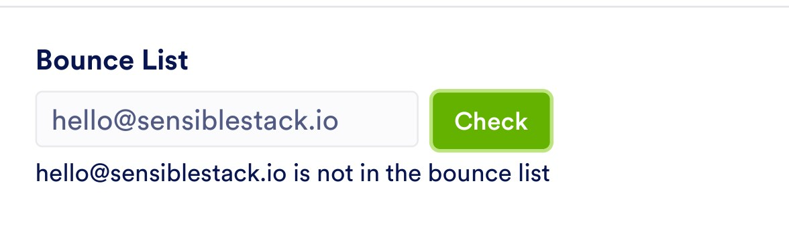

The Journal · Fix series · Published November 2026
The submissions are sitting in Jotform, safe and sound. The notification emails that were supposed to tell you about them have quietly stopped, and every test you run says email is working fine. Both halves of that sentence have a cause, and neither is the one you would guess.
This post contains one affiliate link, to Jotform, marked where it appears.
A form that used to email you every submission stops emailing. Nothing has been changed, nothing looks broken, and the submissions themselves are all there when you log in. Or the second half of the pattern: you get the notifications, but a colleague or a client address on the same form never does, and their copy has never arrived.
Jotform keeps a bounce list. When an email to an address bounces, a full mailbox, a server that rejects the message, an address that no longer exists, Jotform adds that address to the list and stops sending to it. Entirely. Every form, every notification, until the address is removed.
The reasoning is sound: too many bounces damage delivery for everyone sending through Jotform, so the platform blocks the address until the underlying problem is fixed. What is not sound is the silence. There is no banner in your account saying an address has been blocked. The notifications just stop, and the form looks healthy, because the form is healthy. The block sits on the address, not on the form.
Here is the part that sends people round in circles for days. In the form's email settings there is a Test Email button, and it feels like the obvious way to check whether notifications work.
It does not test your notification. Jotform's own support team states it plainly in its published answers: the Test Email button sends only to your Jotform account email address, regardless of the recipients you have configured. So the test can succeed, cheerfully, while the actual recipients of the form get nothing at all. If the address that is failing belongs to somebody else, the test button cannot even see the problem.
1. Test properly, with a real submission. Fill in the form yourself, exactly as a visitor would, and submit it. That is the only test that exercises the real notification, the real recipients and the real delivery path. Everything below assumes a real submission, not the test button.
2. Work out whether the email was even sent. In your account history you will find email logs, showing whether a notification was generated and what happened to it. If no email was generated, the notification itself is missing or switched off: look under the form's Settings, then Emails, and recreate the notification from scratch if it is not there. If the email was generated but never arrived, the problem is delivery, and the next step is the likeliest culprit.
3. Clear the bounce list. On your Workspace page, click your profile picture at the top right, then Settings. On the account settings page, find the Bounce List section, click Check, and if your address is listed, click Remove From Bounce List. One limit worth knowing before you waste an afternoon: you can only remove your own account email address this way. If the blocked address belongs to a colleague or a client, Jotform Support has to remove it for you.

4. Check the recipients, and your plan. In the form builder, Settings, then Emails, open the notification and read the Recipients tab character by character. A typo in one address produces exactly this symptom for exactly that person. And if a second recipient never receives anything, check your plan before you check anything else: on the free Starter plan each notification is limited to one recipient. Extra addresses are a paid plan feature, so a silent second recipient can be a plan limit wearing a fault's clothing.
5. Spam folders and whitelisting. Ask every affected recipient to check spam and junk, and to mark a found Jotform message as not spam. Adding noreply@jotform.com to the address book or allow list helps, and Jotform publishes a guide to whitelisting its sending addresses and IPs for stricter corporate filters.
Removing an address from the bounce list fixes the block, not the bounce. If the mailbox is still full, or the filter still rejects Jotform's mail, the address will bounce again and go straight back on the list. Fix the mailbox problem first, then remove the address. If an address keeps landing on the list despite a healthy mailbox, Jotform's own guide recommends the durable fix: set up your own SMTP sender, so notifications go out through your own domain instead of Jotform's.
The bounce list is the likeliest cause, not the only one. A notification can be eaten by a corporate filter after a clean delivery, and no setting inside Jotform can fix somebody else's mail server. The support step for third party addresses is also a genuine friction: the one person who cannot receive the email is the one person who cannot clear their own block, because the self service removal only covers the account address.
The whole fix, start to finish, in 63 seconds:
We tested Pictory to make the video for this post. Check out the full review.
Jotform is one of the programmes that may pay us if you sign up through our link, as our Affiliate Disclosure page explains. If you are signing up anyway, our link is sensiblestack.io/go/jotform/. Until 30 November 2026 it also carries Jotform's Black Friday offer, 60% off annual Bronze, Silver and Gold plans, per Jotform's partner email of 19 November 2026.
Jotform's help guide, How to Remove Your Email Address From the Bounce List, sets out the bounce list behaviour and the removal steps quoted above, including the own address limit and the SMTP recommendation. The Test Email behaviour is stated by Jotform's support team in its published answers of 3 and 5 November 2026, and the email logs and one recipient limit on the free plan appear in the same answers. All checked on 19 November 2026.
Next in this series: the workflow that never fires, and the calendar that double books, both in HighLevel.